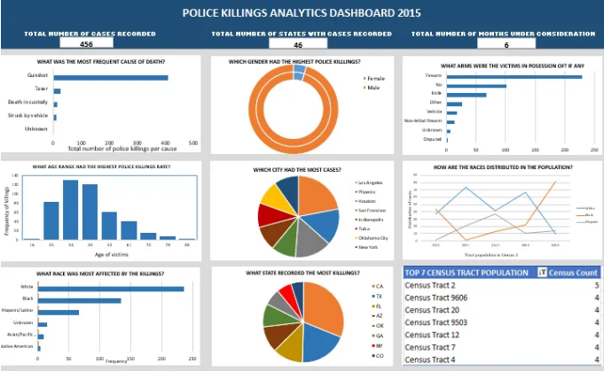
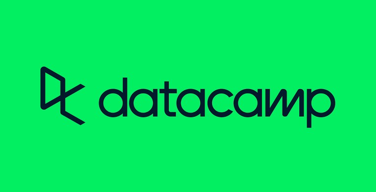

In this project, I utilized MS Power BI to analyze and model the data from 21 different Fifa World Cup tournaments spanning from 1930 to 2018. The goal of this project was to uncover patterns and trends in each year's occurrences, including the winners, total attendance, goals scored, and more. I compiled the relevant insights I generated into an interactive dashboard for easy presentation, with each year serving as a slicer for individual world cup tournaments.

This project contains the code implemented in the first task of my virtual internship with KPMG through Forage.
As part of the task, I examined four datasets provided by Sprocket Central Pty Ltd (via KPMG) and identified all data quality issues using Python and SQL.
The goal of the task was to highlight all notable data quality issues, methods used to mitigate them, and recommendations. This approach aimed to enhance the precision of the underlying data utilized to inform business decisions, which was then communicated to the client via email.
The attached pdf file (email) contains all significant findings and recommendations.
This project contains the code implemented for my capstone project for the data analyst in SQL career track with Datacamp.
In this project, I explored over 13000 best-selling video games created between 1977 and 2020 with sql. I compared a dataset containing details of game sales with a dataset containing critic and user reviews to determine whether or not video games have improved as the gaming market has grown.
The goal of this project was to determine the best performing year for video games.

This project contains the documentation of an in-depth analysis of a police killing dataset found on Kaggle using Microsoft Excel. The police killings dataset is an excel CSV document that provides information on victims of police killings between the months; of January to June 2015 in America. The goal of this project was to suggest factors that led to increased rates of police killings and generate smart insights to reduce future occurrences.

This contains the python project in my datacamp portfolio workspace.
In this project I analyzed and visualized the stock data of Facebook and Amazon, calculating the risks and returns using Sharpe Ratio.